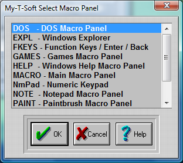

| My-T-Soft®: for Windows; Indestructible Keyboards and Indispensable Utilities; Version 1.80; User's Guide | ||
|---|---|---|
| Prev | Next | |

Use the up-and-down arrows or your Mouse to select one of the existing Macro panels.
Press Enter, or click on OK Button.
Click on the CANCEL button to Close the Dialog & cancel any selection.